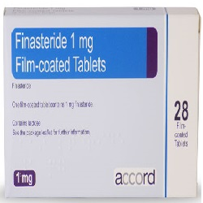

Finasteride

Finasteride သည် ယောကျာ်းကြီးများတွင် အဖြစ်များသော ဆီးကျိတ်ကြီးရောဂါတွင် ဆီးကျိတ်ကို ရှုံ့ပြီးသေးစေသော ဆေးဖြစ်သည်။
အသုံးဝင်ပုံ
- ဆီးမကြာခဏ သွားချင်စိတ်ရှိခြင်း
- ဆီး ညှစ်ပေါက်ရခြင်း
- ဆီးကျန်သလို ခံစားရခြင်း
- ညဘက် ဆီးထသွားရခြင်း စသော ဆီးကျိတ်ကြီးရောဂါ၏ လက္ခဏာများကို သက်သာစေသည်။
- ဆီးကျိတ်ကြီးစေသော DHT ဟော်မုန်း ကို လျော့နည်းစေခြင်းဖြင့် လုပ်ဆောင်ပေးသည်။
- လက္ခဏာမပြင်းထန်သော ဆီးကျိတ်ကြီးရောဂါတွင် Finasteride သည် ခွဲစိတ်ကုသခြင်းကို ရှောင်လွဲပေးသည်။
သုံးစွဲပုံ
- အစာနှင့်ဖြစ်စေ အစာမပါသည်ဖြစ်စေ သောက်နိုင်သော သောက်ဆေး ဖြစ်သည်။
- ပုံမှန်အားဖြင့် တစ်နေ့တစ်လုံး တစ်ကြိမ်သာ သောက်ရသည်။
- အချိန်မှန်သောက်ရန်လိုသည်။
- ၆ လ မှ ၁ နှစ်ပုံမှန် သောက်သောအခါ သိသာသော အကျိုးကျေးဇူးကို ခံစားရမည်။
ဘေးထွက်ဆိုးကျိုးများ
- လိင်စိတ်လျော့နည်းစေသည်။
- အမျိုးသားများတွင် လိင်ဆက်ဆံသောအခါ ကနဦးသုတ်ရည်ကြည် အထွက်နည်းသည်။
- အမွှေးများရှည်စေသည်။
- ရင်ဘတ်တွင် အကျိတ်များပေါ်လာခြင်း။
- နို့သီးခေါင်းမှ အရည်များ စိမ့်ထွက်ခြင်း။
- ရင်သားကြီးလာခြင်း
- ဝှေးစေ့နာခြင်း
- ဆီးမသွားနိုင်ခြင်း စသည်တို့ ရှိလာပါက ဆရာဝန်နှင့် ပြပါ။
သတိပြုရမည့် အချက်များ
- အမျိုးသမီးများနှင့် ကလေးများတွင် မသုံးစွဲရပါ။
- Finasteride သည် အရေပြားကို စိမ့်ဝင်နိုင်သည်။ ထို့ကြောင့် ဆေး ကျိုးပဲ့ခြင်း ရှိနေပါက ကိုယ်ဝန်ဆောင် အမျိုးသမီးများ မကိုင်တွယ်သင့်ပါ။
- မွေးကင်းစ ကလေးငယ်များ ထိမိပါက မျိုးပွားအဂါၤ ပုံမမှန်ခြင်း ဖြစ်တတ်သည်။
- အသည်းရောဂါ ဆီးကျိတ်ကင်ဆာ နှင့် ဆီးလမ်းကြောင်းပြသနာ ရှိနေပါက ဆရာဝန်ကို ပြောပြဆွေးနွေးရန် လိုသည်။
ဆေးအာနိသင်
ဆီးကျိတ်ကင်ဆာ ဖြစ်နိုင်သော PSA ဟူသော ဓာတ်၏သွေးတွင်း ပမာဏကို အပြောင်းအလဲ ဖြစ်စေသည်။
ဆေးအလွန်အကျွံသုံးစွဲခြင်း
ဆေးကို အနည်းဆုံး ၆ လ မှ ၁ နှစ်ပုံမှန် သောက်ရသည်။ ထို့ကြောင့် သွေးစစ်ဆေးခြင်းကို ပုံမှန် ပြုလုပ်ခြင်းဖြင့် ဆေးလွန်ခြင်းကို ကာကွယ်နိုင်သည်။
- ဆေးတွေကို ဘယ်ဆေးမဆို ဆရာဝန် ဒါမှမဟုတ် တတ်ကျွမ်းနားလည်တဲ့ ကျန်းမာရေးဝန်ထမ်းတွေရဲ့ ညွှန်ကြားချက်အတိုင်း တိတိကျကျ သောက်သင့်ပါတယ်။
- မိမိသဘောနဲ့ဆေးရပ်လိုက်တာမျိုး မလုပ်သင့်ပါဘူး။
- ဘေးထွက်ဆိုးကျိုး ပြင်းပြင်းထန်ထန် ခံစားရရင်တော့ ဆရာဝန်နဲ့တိုင်ပင်ဖို့ လိုအပ်ပါတယ်။
Source– ဒေါက်တာချစ်စန္ဒီကျော်